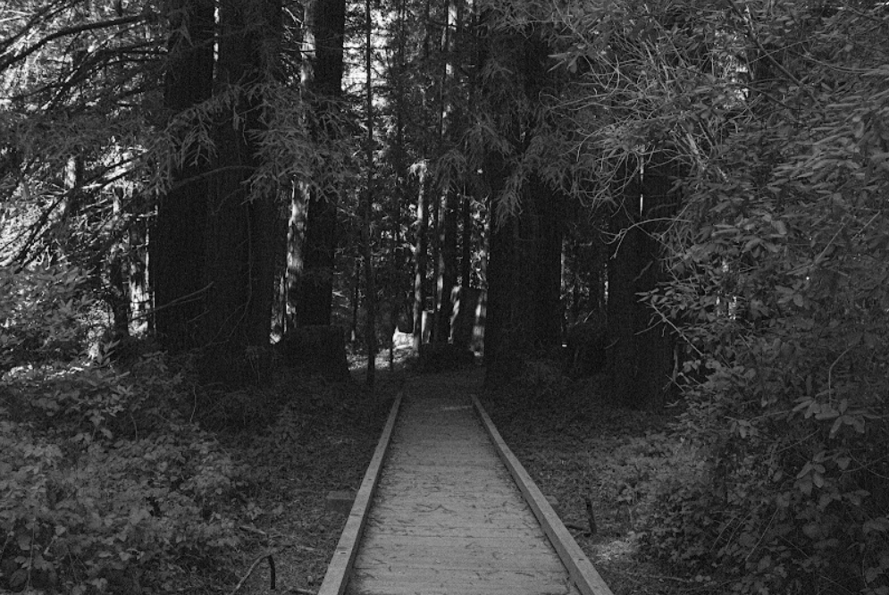
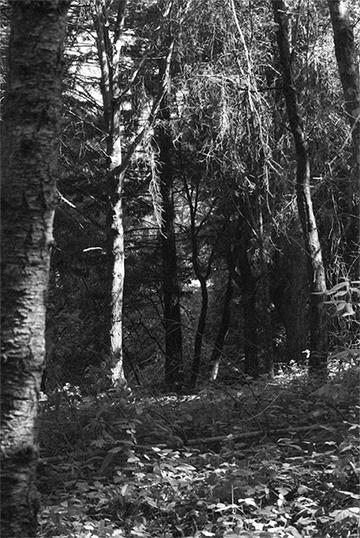

Black & White

Welcome to
to

the
Forest
This project has a focus on nature and escapism. I wanted to exploit contrast and composition to create an unsettling look that would evoke feelings of emptiness and unease in the viewer